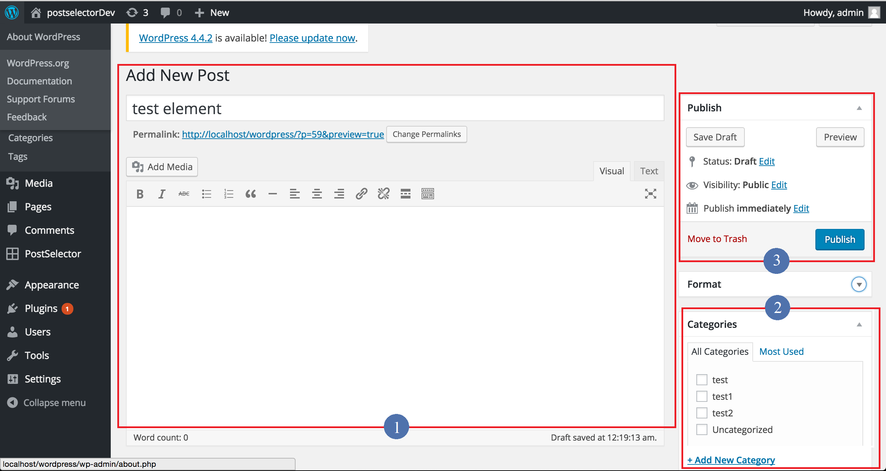
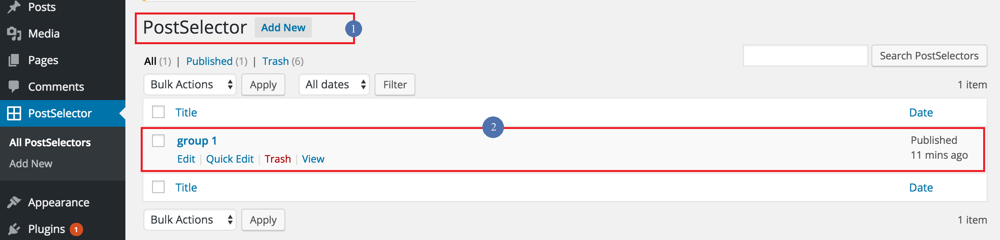
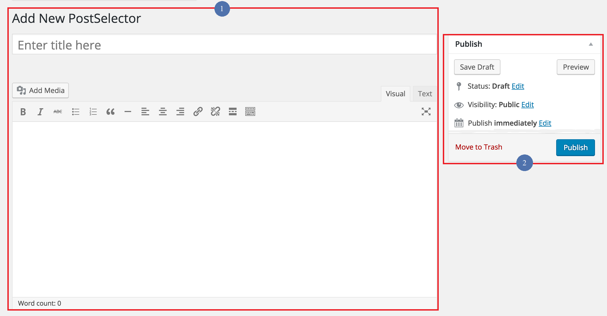
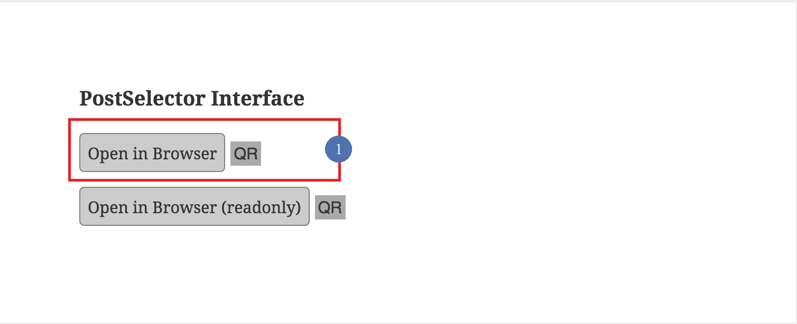
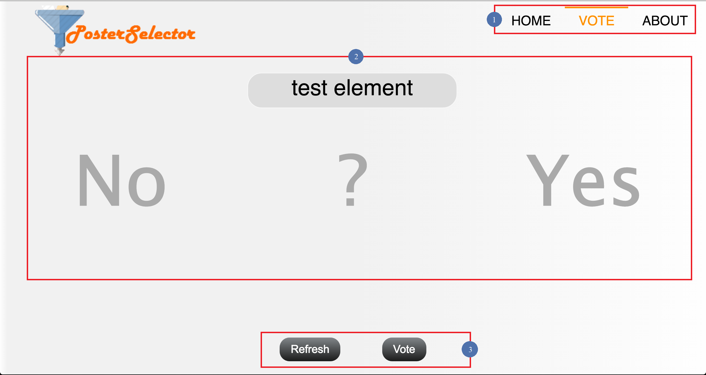
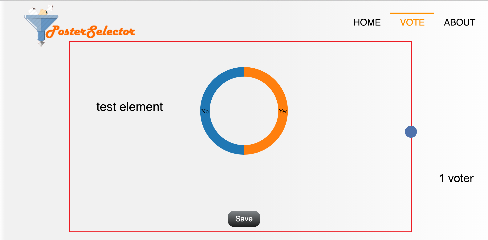

This section introduces you to the dashboard of Postselector. Besides, you will further learn about the following topics:
After log in successfully, you are redirected to Dashboard of WordPress. The starting point for exploring Plstselector is Add Post in WordPress.
There are 3 main divisions in the Post Page:
➊ Firstly add new post title and contents, can change style ever add images, music or media.
➋ Select a category or add a new category then select it as a way to divide groups.
➌ Password protected or private is available in Visibility, click 'Publish' to publish the post.
Now turn to the Postselector edit module. Here to charge the Postselector and transfer into next step. This Section is the main preparation functions, which contains 4 parts:
➊ Click 'Add New' to create a new postselector that showed in the second step, it is considered as a carrier to compile details about the Vote.
➋ Click 'Edit' to modify the setting in the third step as well as click 'View' to enter the intermediate page show in the fourth step.
➊ This part is mostly the same as Add Post that also can add title and contents and ever images, music or media.
➋ Password protected or private is available in Visibility, click 'Publish' to publish the postselector.

➊ Here to select the category that this postselctor belong to, then the posts divided into this category can be viewed under this postselector.
➋ Change the time to set Valid date to limit last time to vote.
➊ After clicking 'View' of the postselector, enter the intermediate page and then 'Open in Browser other than 'Open in Browser(readonly)'.
The last topic is Vote Page that displays processes and results of vote.
➊ Take common actions via Home, Vote and About as click 'Home' to go back to home page to view published posts, click 'About' to view the about page as user guides and copyright pronounced as well as Vote is the current page.
➋ Drag posts among three column to vote for them while click them to learn the contents included.
➌ Click 'Refresh' button to update the posts while click 'Vote' to confirm votings.
➊ After confirm the vote result, the posts get more percentage of 'No' will be moved to trash while more percentage of 'Yes' will be finally published while fifty-fifty will stay the same by click 'Save' button.
2014, 2015© The university of Nottingham.